관광 명소 15곳
사진은 Wikimedia Commons에 공개된 실제 촬영본이며, 저작자와 라이선스를 각 사진 아래에 적었습니다. 촬영한 날씨·시기·구도에 따라 실제 모습은 다를 수 있습니다.
-

사진: Mstyslav Chernov · CC BY-SA 3.0 · Wikimedia Commons 탈린 구시가지Tallinn Old Town
중세 한자동맹 상업도시가 온전한 골목·성벽·길드 건물을 간직한 유네스코 세계유산.
자세히 보기
툼페아 언덕의 상부 도시와 라에코야 광장의 하부 도시를 나눠 보는 것이 좋다.
- 방문 유의사항
- 석조 보행로가 많으며 구시가지는 일반 주거공간이기도 하다.
출처: whc.unesco.org
-

사진: Alexandre Meu · CC BY-SA 4.0 · Wikimedia Commons 알렉산드르 네프스키 대성당Alexander Nevsky Cathedral
러시아 제국 시기의 정교회 대성당으로 양파 모양 돔이 인상적인 건축물.
-

사진: EU2017EE Estonian Presidency · CC BY 2.0 · Wikimedia Commons 카드리오르그 궁전·정원Kadriorg Palace
표트르 대제 시대의 바로크 궁전과 계획 정원.
-
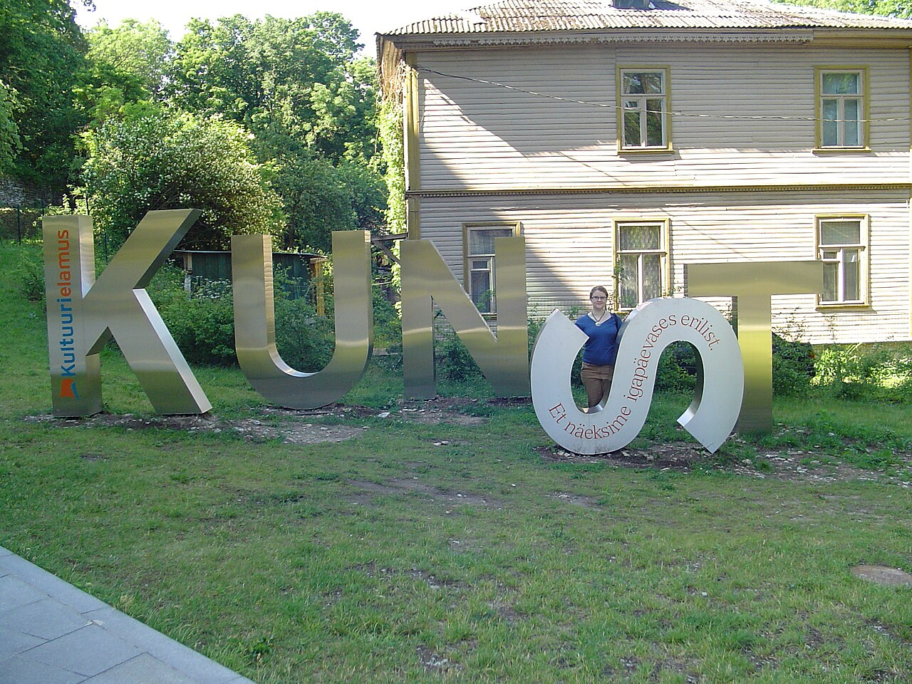
사진: tero.keskivalkama · CC BY 3.0 · Wikimedia Commons 쿠무 미술관Kumu Art Museum
석회암 경사면에 들어선 현대적 미술관으로 에스토니아 근현대 미술을 소개한다.
-
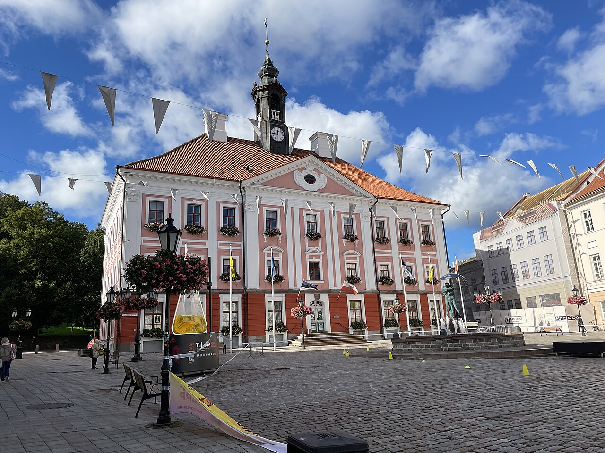
사진: Ypsilon from Finland · CC0 · Wikimedia Commons 타르투 시청광장Tartu Town Hall Square
대학도시 타르투의 중심 광장으로 색채감 있는 고전주의 건물과 조각이 특징.
-
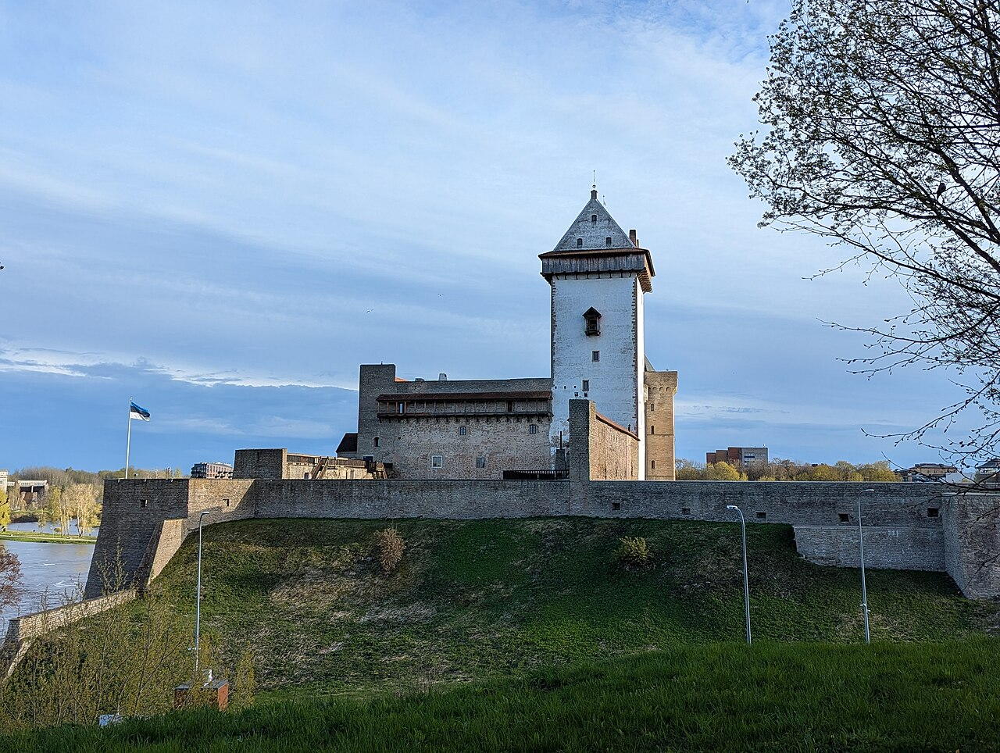
사진: Андрей Романенко · CC BY-SA 4.0 · Wikimedia Commons 나르바 성과 이반고로드 조망Narva Castle
나르바강을 사이에 두고 에스토니아의 성과 러시아 이반고로드 요새가 마주 보는 국경 경관.
자세히 보기
오랜 교역·군사 전략의 경계이자 오늘날 EU 외부 국경의 상징이다. 유럽의 영토·언어·안보 문제를 설명하는 독특한 시각자료가 된다.
출처: visitestonia.com
-
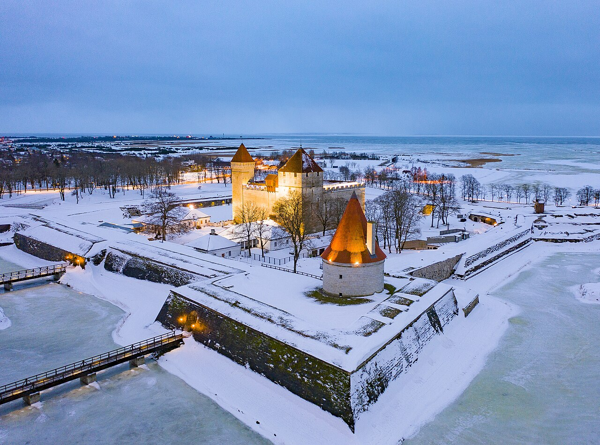
사진: Stefan Hiienurm · CC BY-SA 4.0 · Wikimedia Commons 쿠레사레 주교성Kuressaare Castle
해자와 네모난 석조 본성이 보존된 발트해 섬의 중세 요새.
자세히 보기
사레마섬 역사박물관으로 사용되며 섬의 해양문화와 외세 지배 역사를 함께 전한다. 전형적인 도시 성과 달리 물로 둘러싸인 성의 형태가 선명하다.
- 방문 유의사항
- 섬 이동에는 페리 또는 항공편 이용.
출처: visitestonia.com
-
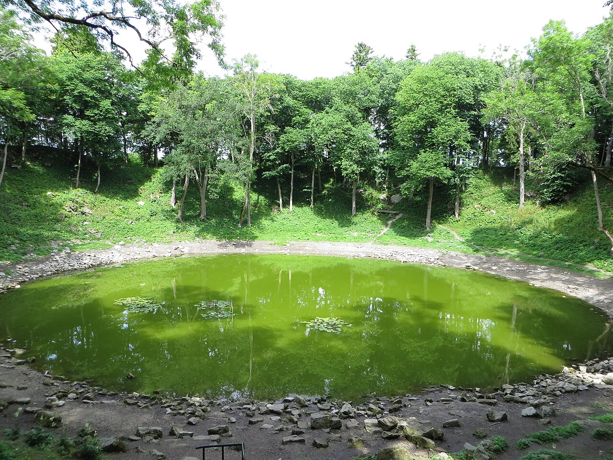
사진: Bernt Rostad · CC BY 2.0 · Wikimedia Commons 칼리 운석 분화구Kaali Meteorite Crater
운석 충돌로 형성된 원형 분화구 호수.
-

사진: Hartmut Schmidt Heidelberg · CC BY-SA 4.0 · Wikimedia Commons 라헤마 국립공원Lahemaa National Park
바위 해안·어촌·침엽수림·늪지·발트독일 귀족 저택이 공존하는 국립공원.
자세히 보기
Viru bog 산책로와 Palmse·Sagadi 영주의 저택을 결합하면 생태와 근세 지역사를 연결할 수 있다.
- 방문 유의사항
- 늪지 보호구역 지정 탐방로에서만 이동.
출처: visitestonia.com
-
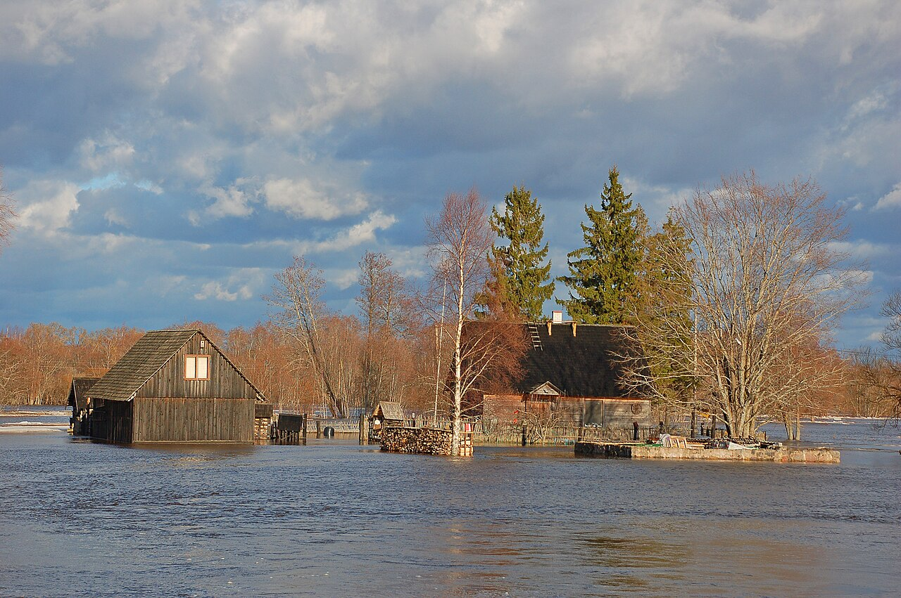
사진: Raul Kask · CC BY 3.0 · Wikimedia Commons 소마 국립공원Soomaa National Park
봄철 범람기 다섯 번째 계절로 알려진 늪·하천 지대.
자세히 보기
물에 잠기는 숲 사이를 통나무배나 카누로 통과하는 지역의 생활·지형이 특징이다. UNESCO가 전통 통나무배 제작 문화를 인정했다.
- 방문 유의사항
- 홍수·기상에 따라 접근 가능성이 크게 달라짐.
출처: visitestonia.com
-
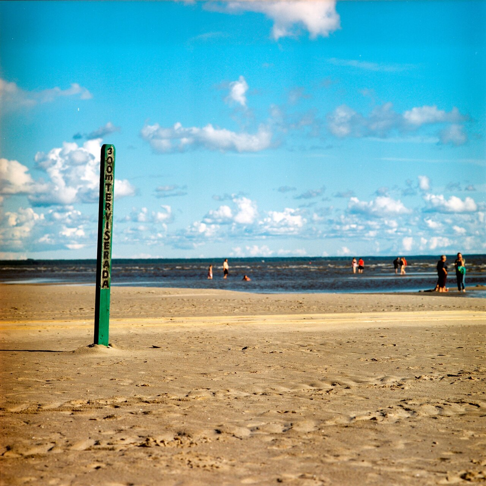
사진: Tanel Teemusk from Estonia · CC BY-SA 2.0 · Wikimedia Commons 패르누 해변Pärnu Beach
넓은 모래사장과 스파·목조 휴양건축이 이어지는 여름 휴양지.
-
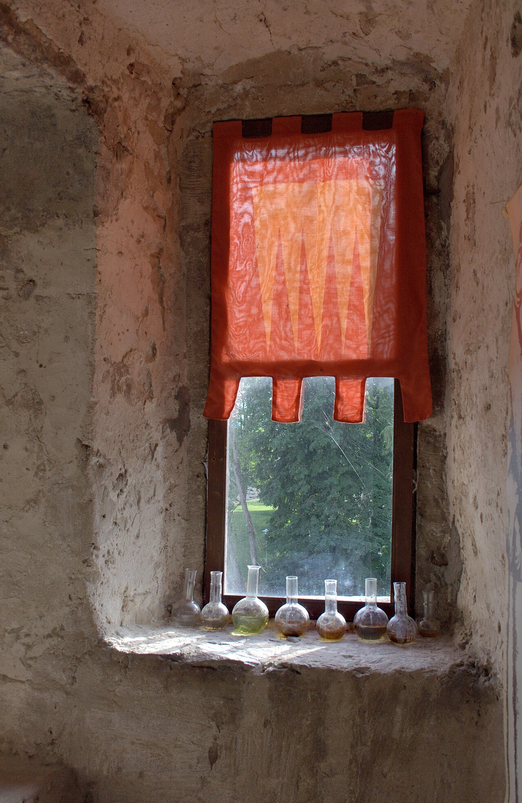
사진: Laima Gūtmane (simka) · CC BY-SA 3.0 · Wikimedia Commons 합살루 주교성Haapsalu Castle
고딕 성당이 딸린 중세 주교성으로 흰 여인 전설이 전해진다.
자세히 보기
해변 산책로와 목조 별장, 스파 역사까지 함께 다루면 휴양도시의 특징이 드러난다.
- 방문 유의사항
- 박물관 유료구역/무료 정원 동선 구분.
출처: visitestonia.com
-
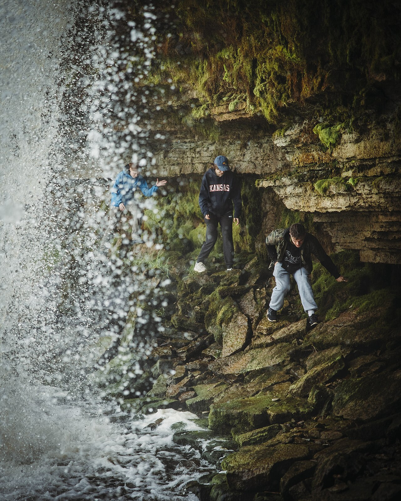
사진: Peeterpaaver · CC BY 4.0 · Wikimedia Commons 야갈라 폭포Jägala Waterfall
석회암 절벽을 넘어 떨어지는 에스토니아의 대표 폭포.
자세히 보기
여름의 강한 물줄기와 겨울의 얼음벽이 전혀 다른 분위기를 만들어 계절별 비교 카드에 좋다.
- 방문 유의사항
- 결빙기 미끄럼과 절벽 가장자리 안전 유의.
출처: visitestonia.com
-
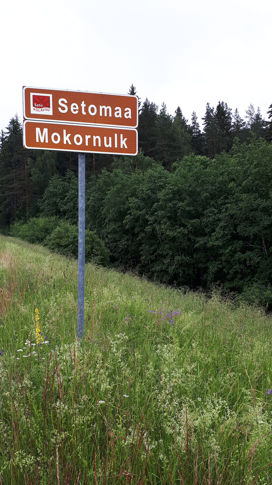
사진: Klarqa · CC BY-SA 4.0 · Wikimedia Commons 세토마 지역Setomaa
고유한 노래·정교회 전통을 유지하는 세토 공동체의 문화권.
-
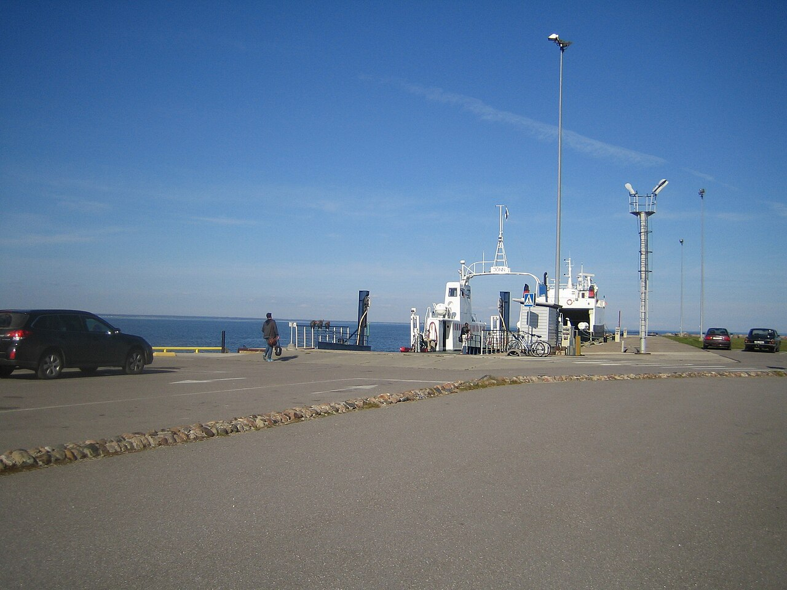
사진: Mona-Mia · CC BY-SA 3.0 · Wikimedia Commons 키흐누 섬Kihnu Island
줄무늬 치마와 선원문화로 유명한 유네스코 무형유산 공동체.
여행 전에 확인하세요
운영시간·입장료·예약·개방 여부는 계절과 상황에 따라 바뀝니다. 방문 전에 각 명소의 공식 안내에서 다시 확인하세요. 카드의 "자세히 보기"에 참고한 출처를 적었습니다.